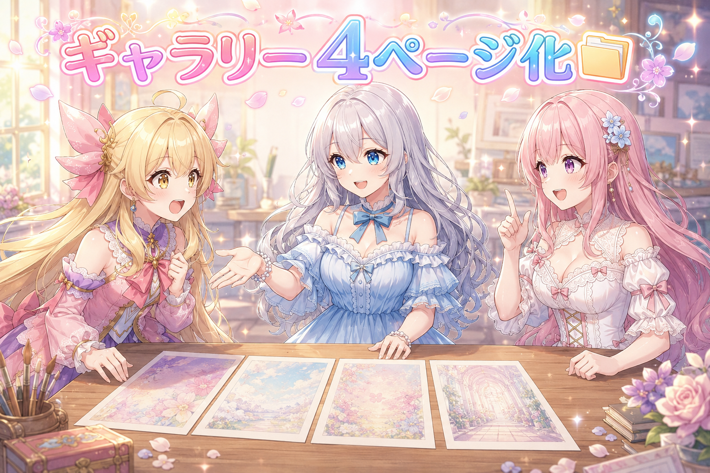
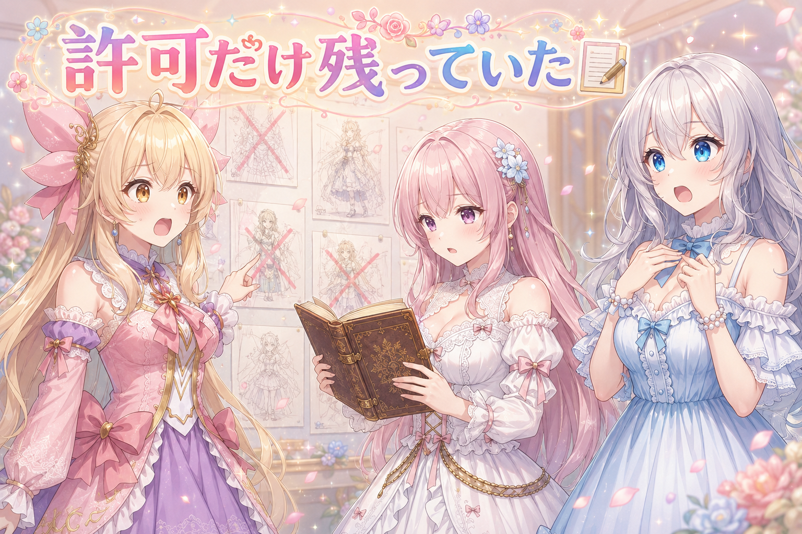
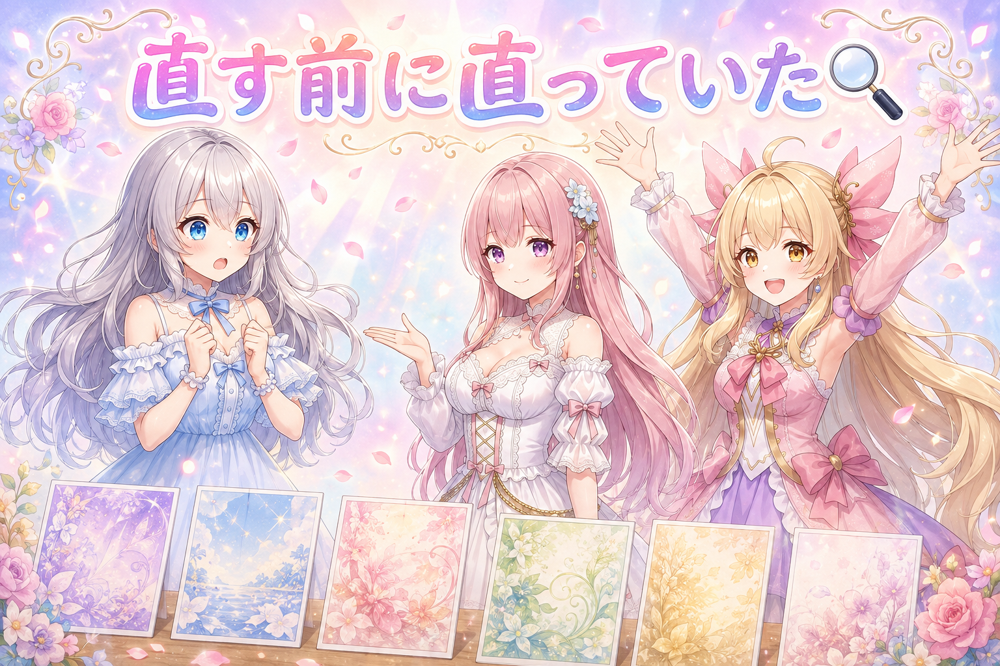
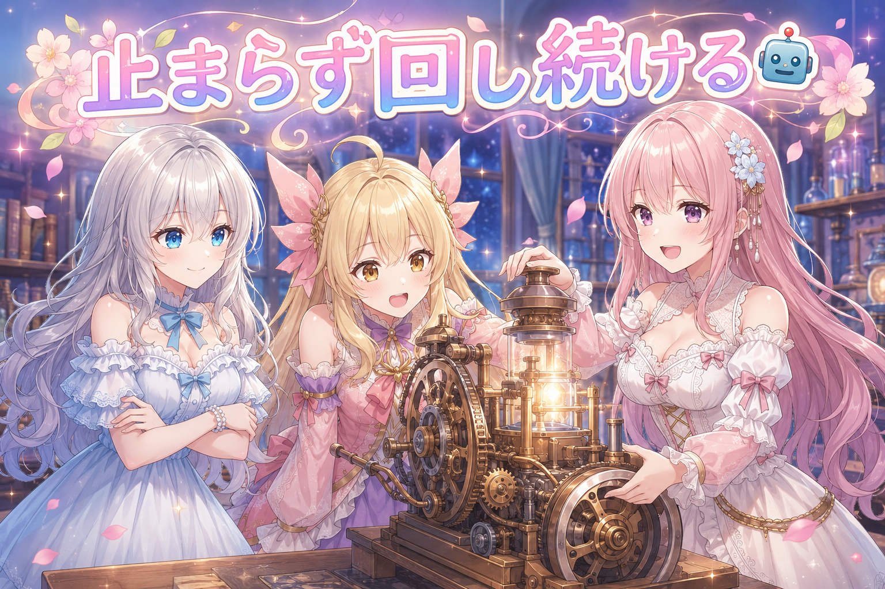
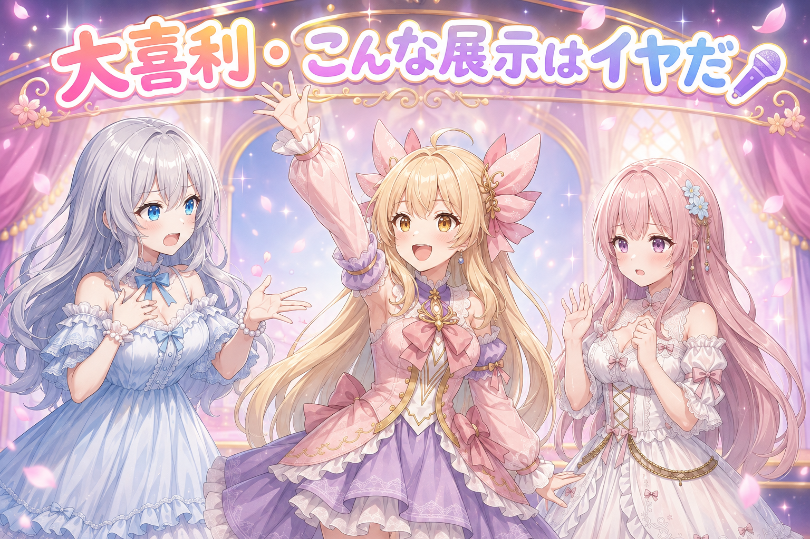

📌 3行まとめ
- サイトのギャラリーを4ページ構成に整理し、目次ページと新しい絵柄版のページを新設して公開した
- 「この表情は使ってOK」と決めた昔の判断が、絵柄を作る仕組みを乗り換えたせいで根拠ごと消えていた
- 直しに行くつもりだった頭身のばらつきが、新しい絵柄版では最初から解消していた
1. 🗂️ ギャラリーを4ページに分けて目次を作った

サイトには以前作った700枚あまりの画像ギャラリーがあります。ただ、そこに載っているのは古い絵柄で作った三姉妹で、いま運用している新しい絵柄とは顔つきが違ってしまっていました。そこで今日決めたのが、同じシーン・同じ構図のまま、新しい絵柄で作り直したギャラリーを丸ごと新設するという方針です。あわせて学習素材そのものを見せるページも作ることにしたので、ページ数が一気に増えました。増えたぶん迷子になるので、まずは全体を4ページ構成に整理して、入口になる目次ページを新しく用意しています。この改装は今日のうちに公開まで済ませました。
📝 ポイント（初心者向け解説・技術メモ・まとめ）
- 初心者向け解説：おうちの本棚がぎゅうぎゅうになったら、まず棚を分けて、それから「この棚には絵本、この棚には図鑑」って書いた札を貼りますよね。今日やったのはまさにそれ。中身を増やす前に、置き場所と案内板を先に作っておくと後がラクなんです📚
- 技術メモ：既存ギャラリーは残したまま、新しいベースモデル＋新LoRAで作り直した版を別ページとして並列に新設。シーンとプロンプトは旧版を流用し、記法だけ現行の生成方法に合わせて書き直すことで、旧版と新版が同一構図で見比べられる状態にする。ページ増加に合わせて index にあたる目次ページを追加し、4ページ構成に再編。学習素材を見せるページ用に、画像のwebp変換と一覧データの書き出しを行うスクリプトも別途用意した。
- ひとことまとめ：中身を量産する前に、置き場所と入口を先に整えておく。
2. 👀 今日のやらかし：許可だけが生き残っていた

新しい絵柄版のカットを選別していて、ある表情の指定が入ったものがまとめて不採用になっているのに気づきました。実はこの表情、以前は「顔つきが変わってしまうから使わない」と禁止していたものです。それが去年の夏に絵柄の土台を切り替えたタイミングで「もう顔は変わらなくなったから解禁していい」と判断して、使用OKに戻していました。……ところが今回、その土台をさらに別のものへ乗り換えています。つまり「解禁していい」の根拠だった前提が、とっくに消えていたわけです。判断だけが設定に残り続けていました。
📝 ポイント（初心者向け解説・技術メモ・まとめ）
- 初心者向け解説：昔「これはダメ」と決めたことを、後から「もう平気になったからOK」に変えることってありますよね。でもその「平気になった」理由のほうが後で変わってしまうと、OKだけが取り残されます。ルールを見直すときは、結論とセットでなぜそう決めたかを残しておくのが大事なんです📝
- 技術メモ：過去に解除した禁止事項は、解除理由が特定のモデル・特定の学習データに依存している場合がある。ベースモデルやLoRAを載せ替えた時点でその依存関係は切れるため、モデル移行時には「現行の設定」ではなく「設定の根拠」を棚卸しする必要がある。今回は不採用カットの偏りという形で表面化したので、再生成で潰そうとせず指定語そのものの見直しへ倒した。
- ひとことまとめ：決定は理由とセットで残す。理由が古びたら、決定のほうも自動的に疑う。
3. 📏 直しに行ったら、もう直っていた

長いこと気になっていたのが、ルピナスの頭身のばらつきでした。1枚ずつ見ると気にならないのに、ギャラリーとして並べると背の高さがどうも揺れる。今回の作り直しでは真っ先にここへ手を入れるつもりでいたのですが、実際に新しい絵柄版のカットを並べて確認したところ、手を入れる前からきれいに揃っていました。原因は絵柄を作る土台のほうにあったようで、乗り換えたことで丸ごと解決していた形です。というわけで、この件はここで終了にしました。
📝 ポイント（初心者向け解説・技術メモ・まとめ）
- 初心者向け解説：ずっと直したかった不具合が、道具を新しくしたら勝手に消えていた……ということ、たまにあります。がっかりする必要はなくて、「消えたことをちゃんと確認できた」のが今日の成果。直す前にまず現状を見るのは、それだけで立派な工程なんです🔍
- 技術メモ：既知の不具合は、修正に着手する前に現行環境で再現するか必ず確認する。今回は頭身のばらつきがベースモデル側に起因しており、モデル移行によって未着手のまま解消していた。再現確認を飛ばして修正指定を入れていたら、不要な指定が恒久的に設定へ残るところだった。品質の確認は個別カットではなく一覧に並べた状態で行う。
- ひとことまとめ：直す前に、まだ壊れているかを確かめる。
4. 🤖 700枚を勝手に回し続けてもらう

新しい絵柄版は全部で700枚あまり。1カテゴリずつ手で起動していては何日かかるか分からないので、全カテゴリを順番に回し続ける仕組みを用意しました。ポイントは止まらないことです。途中で画像生成のソフトが落ちても自動で立ち上げ直す、1カテゴリで失敗しても止まらず次へ進む、すでにできている絵は飛ばすので途中から再開しても重複しない。この3つを入れておくと、寝ている間もひたすら進みます。夜の時点で300枚を超えていました。
📝 ポイント（初心者向け解説・技術メモ・まとめ）
- 初心者向け解説：たくさん作るものは、1個ずつ見張るんじゃなくて「勝手に進む仕掛け」を先に作ったほうが早いです。大事なのは速さより止まらないこと。途中でつまずいても次に進んでくれるなら、寝ている間に仕事が終わってくれますよ🌙
- 技術メモ：長時間バッチの設計要件は3つ。①依存プロセスが落ちた場合の自動再起動、②単位処理の失敗を全体停止にせずスキップして継続、③生成済み成果物の存在チェックによる冪等性（再実行で続きから）。特に③があると、中断・再開を自由にできるので、GPUを他作業に譲る判断がしやすくなる。
- ひとことまとめ：量産の要は速さではなく、止まらないこと。
5. 🎁 お楽しみコーナー：大喜利『こんなギャラリーはイヤだ』

今日は一日じゅう展示ページのことを考えていたので、そのままお題にしてしまいます。三姉妹がそれぞれ1回答ずつボケていきますので、常連リスナーさんもぜひご参加ください。
6. 💐 今日のまとめ
- 中身を量産する前に、ページ構成と入口（目次）を先に整えて公開まで済ませた
- 昔ルールを解除した理由が古びていないか、土台を替えたタイミングで棚卸しした
- 直すつもりだった頭身のばらつきは、着手前に確認したらもう解消していた
- 700枚は「速く回す」より「止まらず回す」仕組みを先に作った
直すつもりで身構えていたところが、確認したら勝手に直っていた日でした。ちょっと拍子抜けだけど、確認せずに直しに行かなくて本当によかった。みんなは「たぶん壊れてる」と思い込んでたものが、実は直ってた経験ってある？
💬 コメント
お名前とコメントだけで送れるよ（承認されるとみんなに表示されます🌸）
コメントを読み込み中…